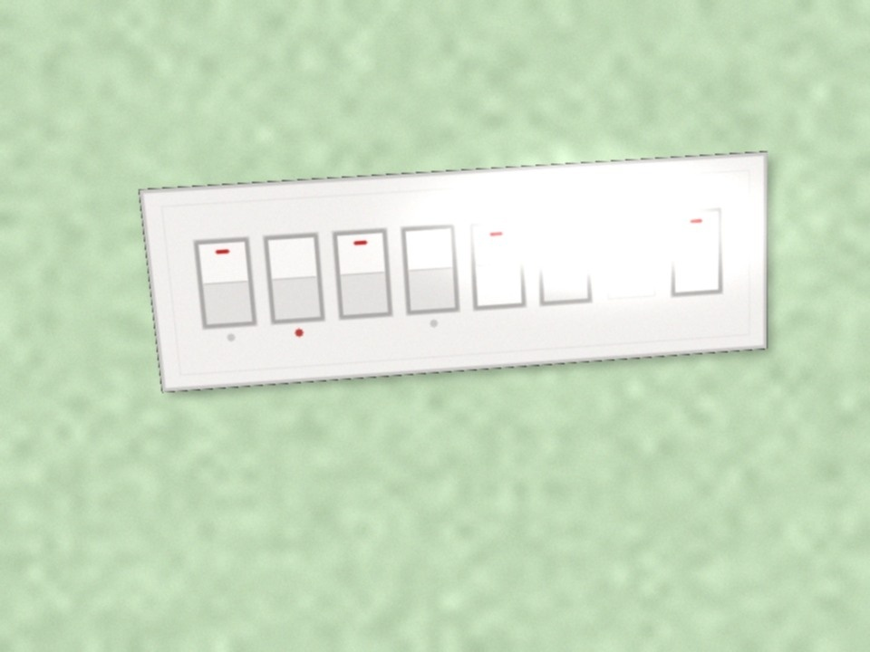
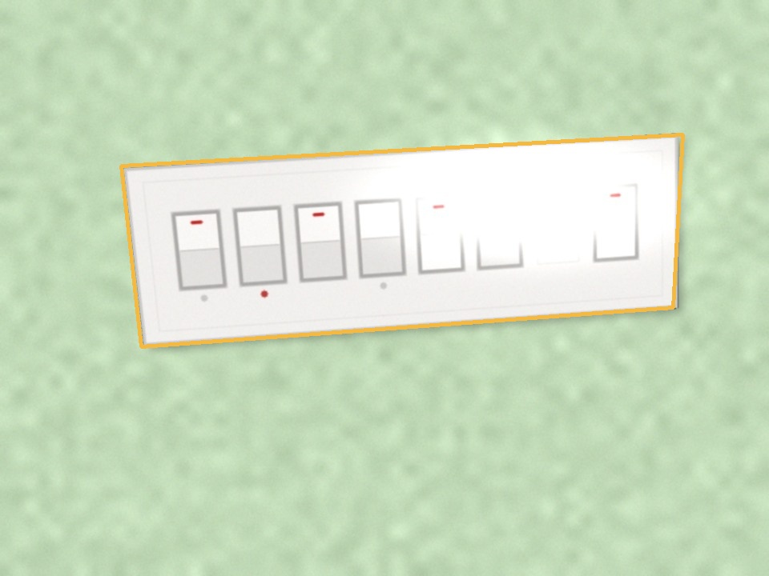
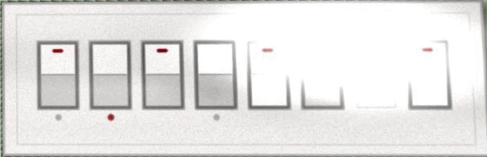
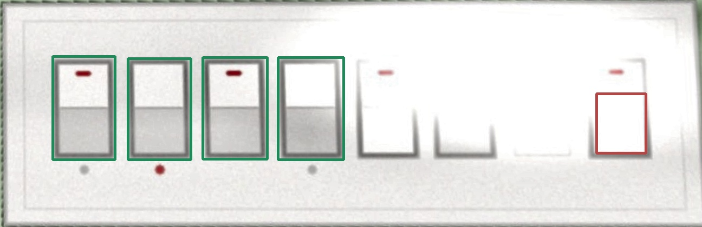
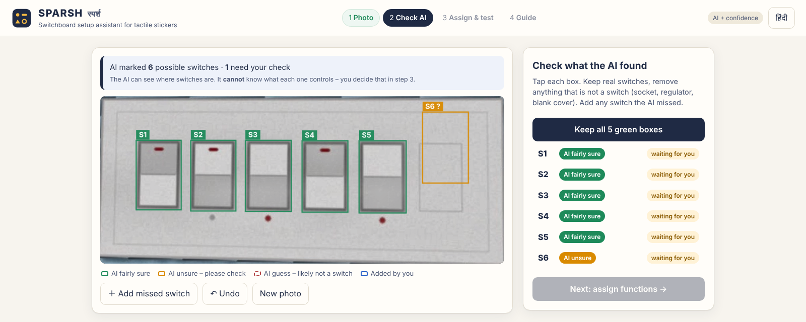

LIVE DEMO · WORKING PROTOTYPE
SPARSH
AI-assisted tactile labelling of switchboards
Screen segments are a real recording of the running app, driven click by click. Nothing is mocked up.
The board is a glossy plate photographed with flash glare: a hard case for the AI.
What the AI does with one photo




1Find the plate (yellow outline)
2Straighten it
3Find switches + score confidence
Two-stage detector: classical proposals + learned verifier (HOG + logistic regression) · ≈ 0.2 s on a laptop CPU · glare hid 2 switches here, so the human step matters
The stickers the guide refers to
All off the shelf: bump stickers + a hook-and-loop square. No printing, no wiring. The code is refined from users' touch errors (pilot P1).
Next in the full demo: stickers fixed on a real board, then a tactile test ("find the fan").
Study B: same AI, two displays, 25% of its boxes deliberately wrong


AAI + confidence: the planted S6 is marked "unsure" and must be checked
BBare AI: every box looks the same; "Keep all" keeps the planted one too
20–24 installers try both. We count how many seeded errors survive into the final labels (over-reliance), how many correct boxes they wrongly remove (under-reliance), and the time cost. Participants are debriefed afterwards.
What you just saw
✓ AI found 4 switches, flagged 1 as a guess, and missed 2 under glare
✓ The human redrew the guess and added the missed switches: no restart
✓ The AI never chose what a switch controls. Every function was assigned and checked by a person
✓ Confirmation stayed blocked until everything was reviewed, assigned and verified
✓ Bilingual installation guide with the sticker bill and a final check with the user
✓ Study B tests whether showing the AI's confidence stops its mistakes reaching the wall
Detector F1: 0.995 synthetic test · 0.909 unseen stress conditions · real-photo results in the report
Team SPARSH · BITS Pilani · BITS F364